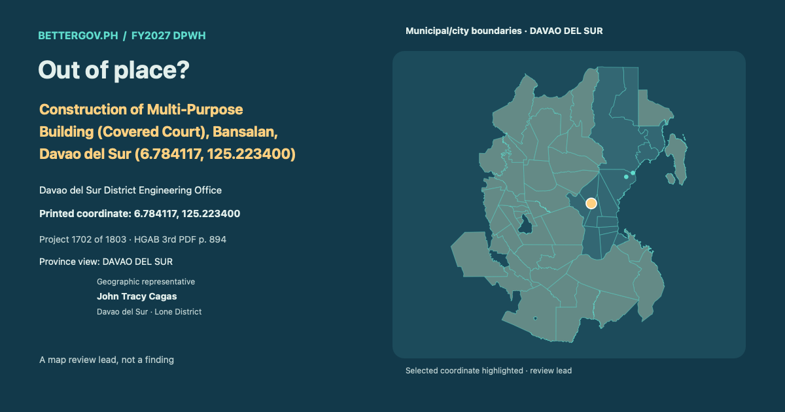

John Tracy CagasDavao del Sur · Lone DistrictOfficial profile ↗

Davao del Sur District Engineering Office · Geographic representative: John Tracy Cagas · Davao del Sur · Lone District. Printed coordinate 6.784117, 125.223400. Geographic coverage is not sponsorship. Proposed allocation. Coordinate signals are review leads, not findings.